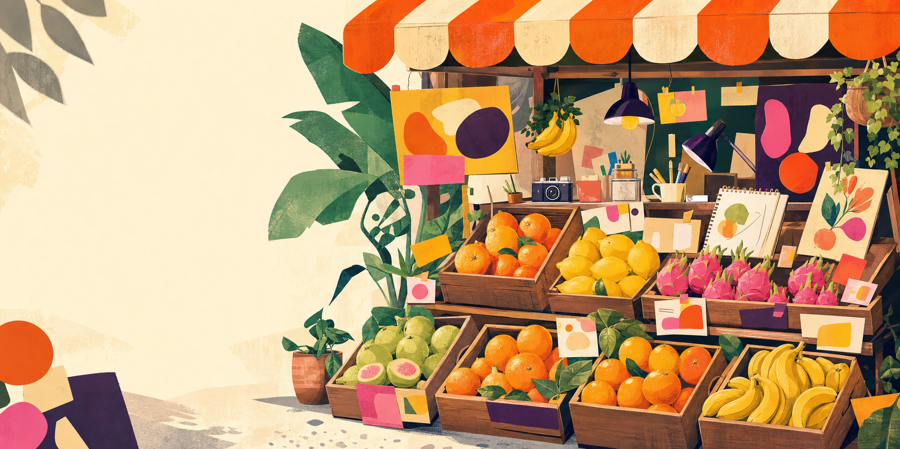

ABOUT THE SHOPKEEPER嗨，我是小果。
嗨，我是小果。
專門挑選好點子。

MY STORY設計，是把複雜的事
設計，是把複雜的事
整理成一口剛好的甜。
我喜歡逛市場：招牌的顏色、老闆俐落的動作、紙箱上手寫的字，都有一種真誠而直接的生命力。這個作品集便從「水果行」出發，把我的作品當成一箱箱當季鮮貨，清楚、熱情地介紹給你。
我的工作方式兼顧策略與感受。先理解真正的問題，再用清楚的資訊層級、鮮明的視覺語言與細緻的互動，做出好看也好用的成果。
我的配方
視覺設計UI / UX品牌識別插畫HTML / CSS